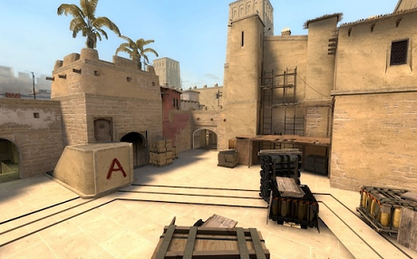
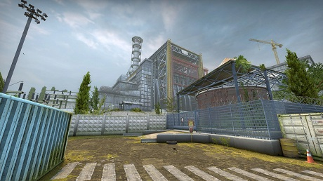
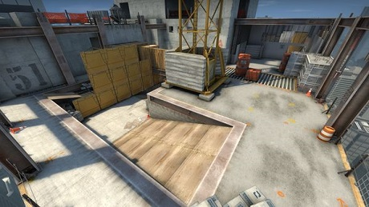
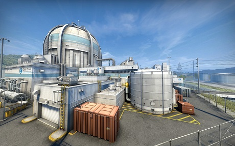
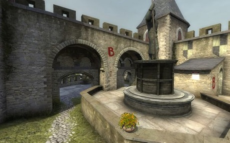

Counter-Strike: Global Offensive — Mapy turniejowe

de_mirage
Ulubiona i najczesciej grana mapa Piotra Szeligi

de_overpass
Mapa która Piotr Szeliga grał 3 razy

de_cache
Na tej mapie nie rozegrał ani jednego Spotkania

de_vertigo
Mapa która Piotr Szeliga grał 19 razy

de_nuke
Mapa którą Piotr Szeliga grał 24 razy

de_cobblstone
Tej mapy ten zawodnik nie gral ani razu